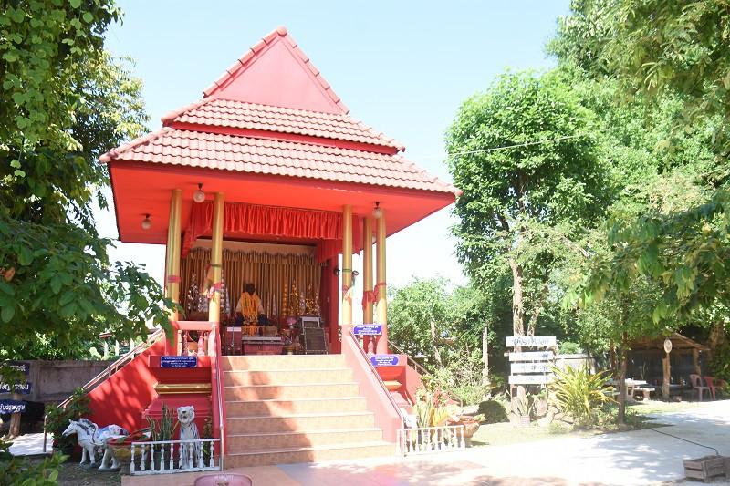

วิถีชีวิต : ชนเผ่าไทกวน

ประวัติความเป็นมา
บ้านนาถ่อนทุ่ง ตำบลนาถ่อน อำเภอธาตุพนม จังหวัดนครพนม บรรพบุรุษของชาวนาถ่อน เผ่าไทกวน มีประวัติความเป็นมาจากแค้วนสิบสองจุไทย
ซึ่ง ขุนบรม เป็นผู้ก่อตั้งเมืองแถง ตั้งแต่ศตวรรษที่ 12 ตั้งเมืองนาน้อย อ้อยหนู ปู่แสนบางนางแสนเก้าหรือเมืองแถง เกิดทุพพิกภัย จึงได้อพยพมาทางใต้
อาศัยอยู่ตามลำน้ำเซน้อย ซึ่งเป็นพื้นที่อุดมสมบูรณ์ ด้วยทรัพยากรป่าไม้ และสัตว์น้ำต่างๆ เป็นที่ราบระหว่างหุบเขาชาวบ้านเรียกว่า กวน ซึ่งหมายถึงพื้นที่แวดล้อมด้วยภูเขา
ณ บริเวณแห่งนั้น จึงได้ตั้งเมืองหลวง ป่งลิง/ปุงลิงมีเมืองผาบัง วังคำ อยู่ริมน้ำเซน้อย (เซบั้งไฟ) ซึ่งน้ำเซบั้งไฟนี้ไหลลงสู่แม่น้ำโขงตรงข้าม อำเภอธาตุพนม เมืองหลวงป่งลิง/ปุงลิง
เป็นชาวเมืองซึ่งมาจากเมืองนาน้อย อ้อยหนู ปู่แสนบางนาแสนเก้า มีการปกครองแบบชาวอีสานโบราณ คือมีเจ้าเมืองอุปฮาด ราชวงศ์ราชบุตร
เป็นผู้ปกครองเมืองอิสระปกครองกันมาหลายชั่วอายุคนผู้ปกครององค์สุดท้ายปรากฏชื่อ ท้าวไทยทรงยศ หลังจากเผ่าไทยกวนได้มาอยู่ดินแดนมรุกขรนคร พร้อมบรรพบุรุษแล้ว
ก็ได้ตั้งถิ่นฐานตามริมน้ำบังฮวก ตรงบริเวณที่เรียกว่า บ้านฮ้างขัวกกตาล กลุ่มบุคคลกลุ่มนี้มีญาติจากเมือง ปุงลิง ผาบัง วังคำมีแม่เฒ่าศรีสองเมืองเป็นหัวหน้า ตั้งบ้านอยู่บ้านทุ่งนาใน
ในฤดูแล้งขาดแคลนน้ำ จึงได้ย้ายไปอยู่หัวดงนานอก ทางไปบ้านดงยอ นานอกคือ ทุ่งใหญ่ นาใน คือ ทุ่งตะวันออกบ้านนาถ่อนทุ่งต่อมาเกิดโรคระบาดจึงย้ายจากบ้านฮ้างผามเพียงมาอยู่บ้านดงไม้ถ่อน
คือ บ้านนาถ่อนทุ่งตราบจนปัจจุบันนี้
- แหล่งท่องเที่ยวชุมชน และท่องเที่ยวเชิงวัฒนธรรม
เส้นทางท่องเที่ยวเชิงวัฒนธรรม
จุดที่ 1 ที่ทำการสภาวัฒนธรรมชมการตีเหล็ก
จุดที่ 2 เยี่ยมชมการตีเหล็กแบบปัจจุบัน
จุดที่ 3 เยี่ยมชมป่าชุมชน บ่อเกลือสินเธาว์
จุดที่ 4 เยี่ยมชมปู่ตาแสง
จุดที่ 5 เยี่ยมชมสักการะพระจักรพรรดิ ณ วัดศรีมงคล
จุดที่ 6 เยี่ยมชมขุมเงิน ณ วัดแก้วเสด็จ
จุดที่ 7 เยี่ยมใบเสมา ณ วัดโพธิ์ลานช้าง
การประกอบอาชีพ
ส่วนมากแล้วชาวไทยกานทำอาชีพทำการเกษตร ทำนา เลี้ยงสัตว์ เลี้ยงโคขุด และตีเหล็ก
(ผู้หญิงเสร็จจากหน้านา ก็จะมาช่วยผู้ชายตีเหล็ก) และยังมี กลุ่มทอผ้า กลุ่มจัดสาน กลุ่มทำแหนม ตีเหล็ก
(พอเสร็จจากหน้านา ผู้หญิงก็จะมาช่วยผู้ชายตีเหล็ก) และกลุ่มทำขนมจีนที่ไม่ใช้แป้ง แต่ใช้ข้าวหมักแทน